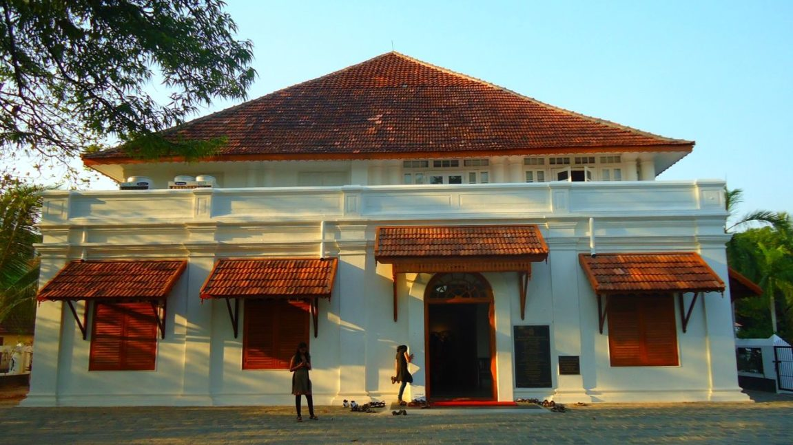
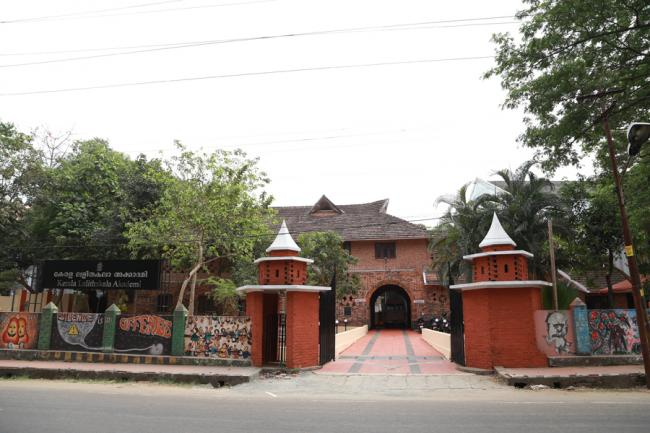
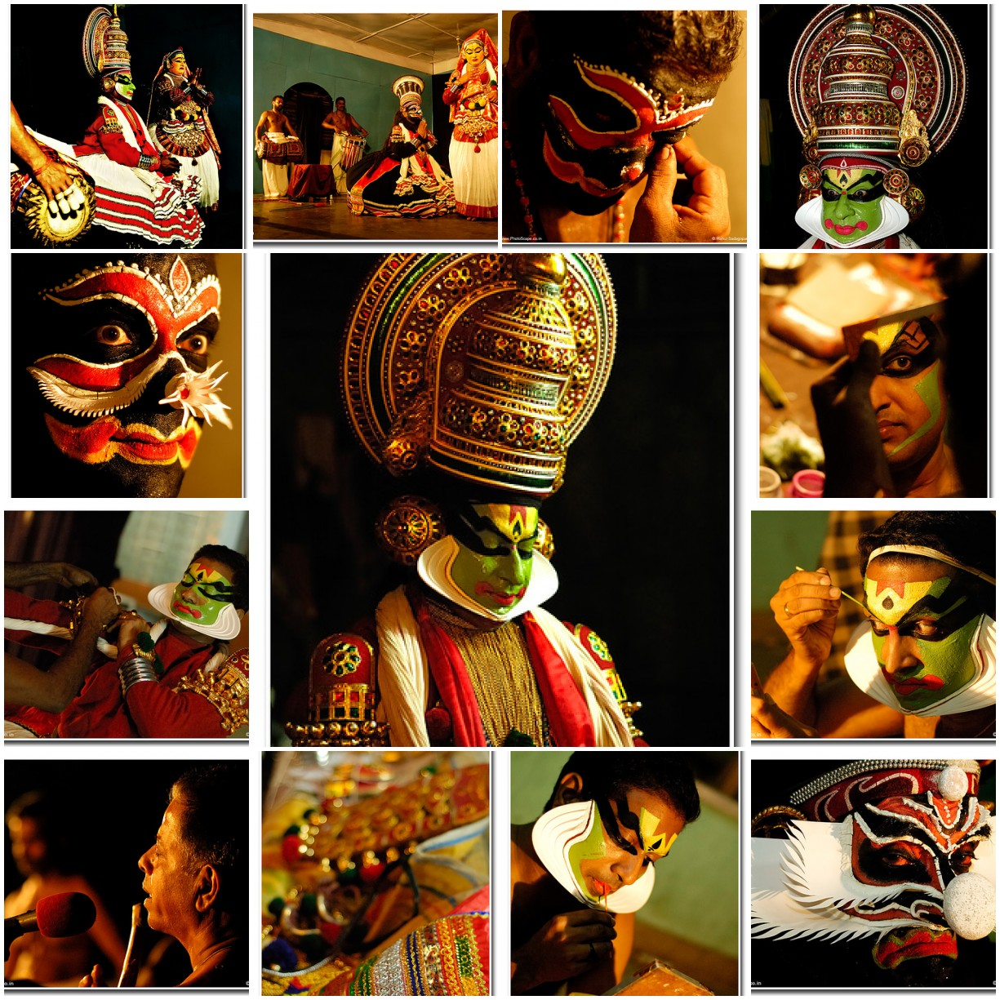
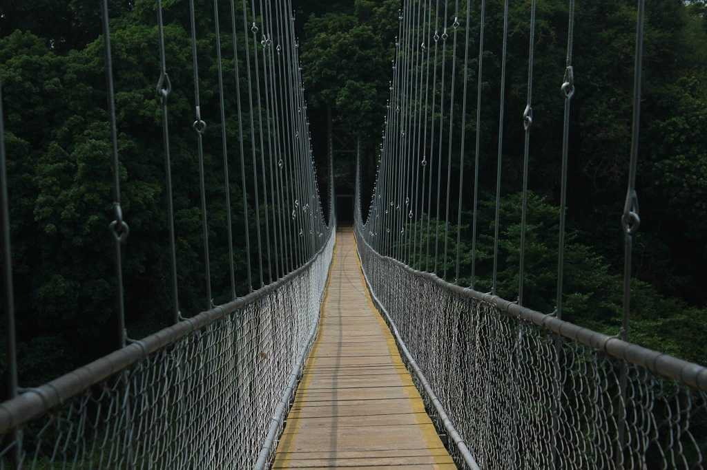
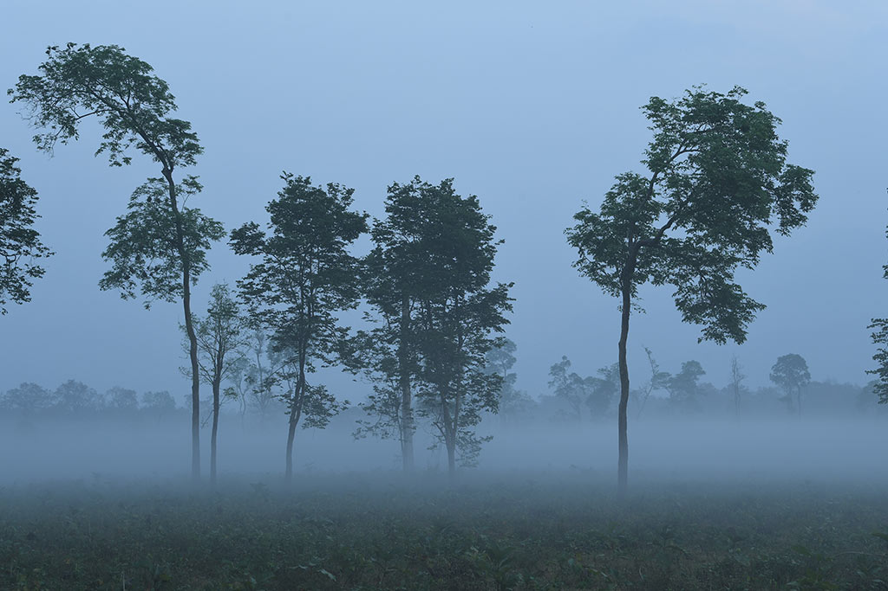
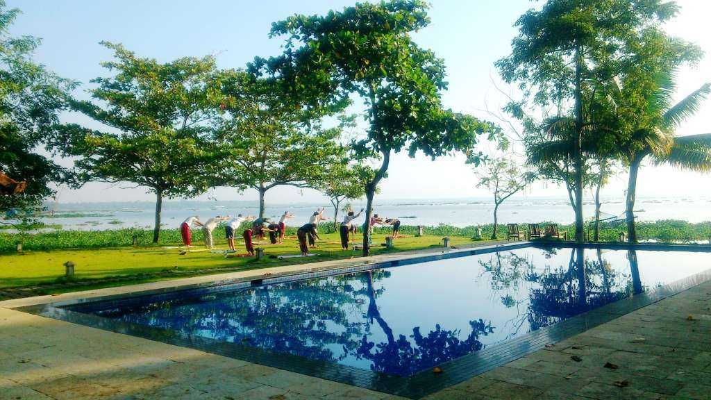
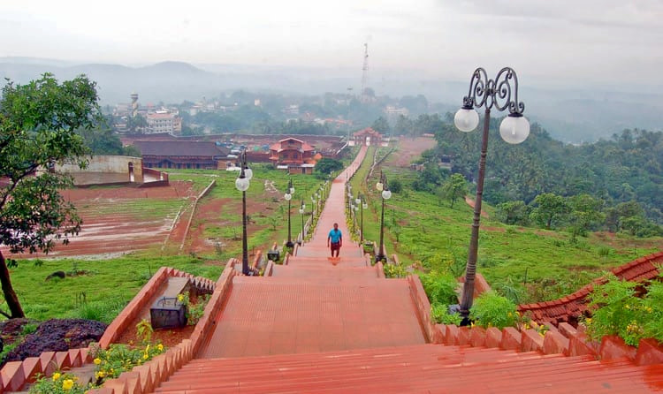

MALAPPURAM - Land of Hilltops
1. LALITHA KALA ACADEMY
  Kerala Lalithakala Akademi, established in 1962, with the objective of conserving and promoting visual arts: painting, sculpture, architecture, and graphics, is an autonomous cultural organization of the Government of Kerala.The Kerala Lalithakala Akademi Complex, designed by the renowned architect Lauri Baker, has the stamp of Kerala’s indigenous architecture. The head-office complex graces the cultural capital of Kerala with its Art Gallery, Reference Library, Archives, and Guest House
Today, the Akademi is a centre for cultural, artistic, and educational activities spilling over to other fields like cartoon and photography. While preserving Kerala’s unique traditional fine arts, the contemporary art scene is updated by bringing artists to camps, workshops, exhibitions and seminars.
The Akademi is governed by a committee of 19 eminent members - leading lights of the times in art and culture, great artists and representatives from cultural organizations. To promote sustained artistic ventures, it supports artists by providing space for exhibitions and honoring them with awards, fellowships and scholarships.

Tribal and indigenous artists and art-forms are brought to limelight revealing the diversity and the richness of our cultural heritage. Co-operation and collaboration with art-organizations and other institutions bring about cultural awareness and encouragement.
The Akademi also promotes research and publication. It organizes summer classes on art and craft for children; conducts seminars to create art awareness and its deeper and subtler values in society.
The Akademi has brought out publications on art and monographs of renowned artist and is also publishing a monthly magazine ‘Chitravartha’ which portrays the programmes organized by the Akademi with write ups of eminent artists.
2. NEDUMKAYAM
  The Nilambur forests are also known for their unique dense rain forests, tribal settlements, waterfalls and the world's first Teak Museum. Nedumkayam, the hidden gem of Nilambur is a treasure trove located in the Western Ghats. Rich with flora and fauna, the Chaliar River that flows through the heart of Nedumkayam serves as the lifeline of the wildlife here. The place is also known for the vast teak plantations. The moment you enter Nedumkayam Rainforest, you feel like the humdrum of daily life slowly melting away and the virgin scent of the forest taking over your senses.
Nedumkayam Rainforest is part of the Nilgiri Biosphere Reserve and is one among the numerous reasons to visit Malappuram. Forest Department conducts various programmes like visit to Elephant Kraal, Visit to Dawson Girder Bridge, Dawson Grave Yard and Karimpuzha River at Nedumakayam in Nilambur. The place is also famous for the teak plantations.

2. SHANTITHEERAM PARK
 Shanthi Theeram Park is a recreational park with a panoramic view of the beautiful natural forestation and water bodies. It is famous for adventure activities and water sports. The park also has a heritage resort on the banks of a lake. The attraction is a paradise for nature lovers and a perfect weekend getaway.
